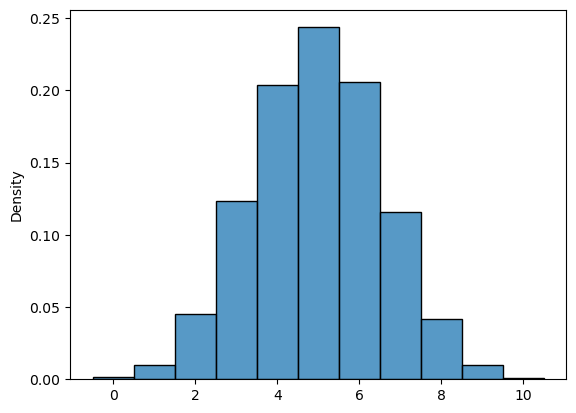
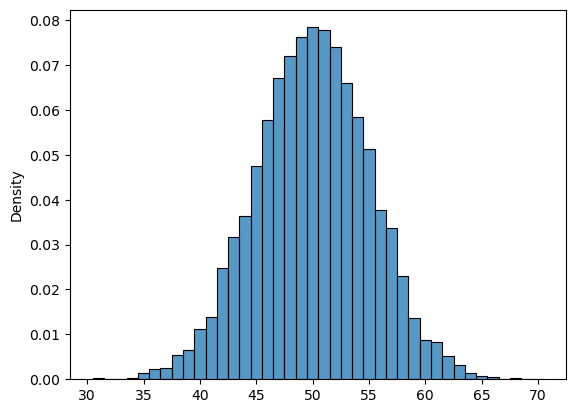
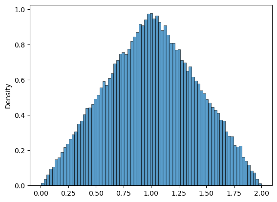

Week 3, Mon, 4/14#
import numpy as np
N = 10000
nflip = 10
x = np.random.randint(0,2,(N,nflip))
x.sum(axis=1) # array of N number, number of head in each trial
x.sum(axis=1) == 7 # array of N number, true if get 7 heads
np.sum(x.sum(axis=1) == 7) # counting number of true, i.e. number of times we get 7 heads out of N trial
np.sum(x.sum(axis=1) == 7)/N # estimate probability by relative frequency
0.1156
N = 1000
nflip = 100
np.sum(x.sum(axis=1) == 70)/N
0.0
import seaborn as sns
N = 10000
nflip = 10
x = np.random.binomial(nflip, 0.5, N)
sns.histplot(x, discrete=True,stat='density')
<Axes: ylabel='Density'>

nflip = 100
x = np.random.binomial(nflip, 0.5, N)
sns.histplot(x, discrete=True,stat='density')
<Axes: ylabel='Density'>

N = 100000
x = np.random.uniform(0,1,N)
y = np.random.uniform(0,1,N)
z = x + y
sns.histplot(z, stat='density')
<Axes: ylabel='Density'>

import seaborn as sns
import pandas
df = sns.load_dataset("penguins")
df
| species | island | bill_length_mm | bill_depth_mm | flipper_length_mm | body_mass_g | sex | |
|---|---|---|---|---|---|---|---|
| 0 | Adelie | Torgersen | 39.1 | 18.7 | 181.0 | 3750.0 | Male |
| 1 | Adelie | Torgersen | 39.5 | 17.4 | 186.0 | 3800.0 | Female |
| 2 | Adelie | Torgersen | 40.3 | 18.0 | 195.0 | 3250.0 | Female |
| 3 | Adelie | Torgersen | NaN | NaN | NaN | NaN | NaN |
| 4 | Adelie | Torgersen | 36.7 | 19.3 | 193.0 | 3450.0 | Female |
| ... | ... | ... | ... | ... | ... | ... | ... |
| 339 | Gentoo | Biscoe | NaN | NaN | NaN | NaN | NaN |
| 340 | Gentoo | Biscoe | 46.8 | 14.3 | 215.0 | 4850.0 | Female |
| 341 | Gentoo | Biscoe | 50.4 | 15.7 | 222.0 | 5750.0 | Male |
| 342 | Gentoo | Biscoe | 45.2 | 14.8 | 212.0 | 5200.0 | Female |
| 343 | Gentoo | Biscoe | 49.9 | 16.1 | 213.0 | 5400.0 | Male |
344 rows × 7 columns
type(df)
pandas.core.frame.DataFrame
df.shape
(344, 7)
df.head()
| species | island | bill_length_mm | bill_depth_mm | flipper_length_mm | body_mass_g | sex | |
|---|---|---|---|---|---|---|---|
| 0 | Adelie | Torgersen | 39.1 | 18.7 | 181.0 | 3750.0 | Male |
| 1 | Adelie | Torgersen | 39.5 | 17.4 | 186.0 | 3800.0 | Female |
| 2 | Adelie | Torgersen | 40.3 | 18.0 | 195.0 | 3250.0 | Female |
| 3 | Adelie | Torgersen | NaN | NaN | NaN | NaN | NaN |
| 4 | Adelie | Torgersen | 36.7 | 19.3 | 193.0 | 3450.0 | Female |
df.body_mass_g
0 3750.0
1 3800.0
2 3250.0
3 NaN
4 3450.0
...
339 NaN
340 4850.0
341 5750.0
342 5200.0
343 5400.0
Name: body_mass_g, Length: 344, dtype: float64
df['species']
0 Adelie
1 Adelie
2 Adelie
3 Adelie
4 Adelie
...
339 Gentoo
340 Gentoo
341 Gentoo
342 Gentoo
343 Gentoo
Name: species, Length: 344, dtype: object
df.bill_length_mm.mean()
43.9219298245614
df[0:2]
| species | island | bill_length_mm | bill_depth_mm | flipper_length_mm | body_mass_g | sex | |
|---|---|---|---|---|---|---|---|
| 0 | Adelie | Torgersen | 39.1 | 18.7 | 181.0 | 3750.0 | Male |
| 1 | Adelie | Torgersen | 39.5 | 17.4 | 186.0 | 3800.0 | Female |
df[df['species']=='Adelie']
| species | island | bill_length_mm | bill_depth_mm | flipper_length_mm | body_mass_g | sex | |
|---|---|---|---|---|---|---|---|
| 0 | Adelie | Torgersen | 39.1 | 18.7 | 181.0 | 3750.0 | Male |
| 1 | Adelie | Torgersen | 39.5 | 17.4 | 186.0 | 3800.0 | Female |
| 2 | Adelie | Torgersen | 40.3 | 18.0 | 195.0 | 3250.0 | Female |
| 3 | Adelie | Torgersen | NaN | NaN | NaN | NaN | NaN |
| 4 | Adelie | Torgersen | 36.7 | 19.3 | 193.0 | 3450.0 | Female |
| ... | ... | ... | ... | ... | ... | ... | ... |
| 147 | Adelie | Dream | 36.6 | 18.4 | 184.0 | 3475.0 | Female |
| 148 | Adelie | Dream | 36.0 | 17.8 | 195.0 | 3450.0 | Female |
| 149 | Adelie | Dream | 37.8 | 18.1 | 193.0 | 3750.0 | Male |
| 150 | Adelie | Dream | 36.0 | 17.1 | 187.0 | 3700.0 | Female |
| 151 | Adelie | Dream | 41.5 | 18.5 | 201.0 | 4000.0 | Male |
152 rows × 7 columns
df.loc[0:2, ['species','island']]
| species | island | |
|---|---|---|
| 0 | Adelie | Torgersen |
| 1 | Adelie | Torgersen |
| 2 | Adelie | Torgersen |
df.loc[df['species']=='Adelie', ['species','island']]
| species | island | |
|---|---|---|
| 0 | Adelie | Torgersen |
| 1 | Adelie | Torgersen |
| 2 | Adelie | Torgersen |
| 3 | Adelie | Torgersen |
| 4 | Adelie | Torgersen |
| ... | ... | ... |
| 147 | Adelie | Dream |
| 148 | Adelie | Dream |
| 149 | Adelie | Dream |
| 150 | Adelie | Dream |
| 151 | Adelie | Dream |
152 rows × 2 columns
df.iloc[0:2, 0:2]
| species | island | |
|---|---|---|
| 0 | Adelie | Torgersen |
| 1 | Adelie | Torgersen |
df.describe()
| bill_length_mm | bill_depth_mm | flipper_length_mm | body_mass_g | |
|---|---|---|---|---|
| count | 342.000000 | 342.000000 | 342.000000 | 342.000000 |
| mean | 43.921930 | 17.151170 | 200.915205 | 4201.754386 |
| std | 5.459584 | 1.974793 | 14.061714 | 801.954536 |
| min | 32.100000 | 13.100000 | 172.000000 | 2700.000000 |
| 25% | 39.225000 | 15.600000 | 190.000000 | 3550.000000 |
| 50% | 44.450000 | 17.300000 | 197.000000 | 4050.000000 |
| 75% | 48.500000 | 18.700000 | 213.000000 | 4750.000000 |
| max | 59.600000 | 21.500000 | 231.000000 | 6300.000000 |
df['bill_ratio'] = df.bill_length_mm/df.bill_depth_mm
df
| species | island | bill_length_mm | bill_depth_mm | flipper_length_mm | body_mass_g | sex | bill_ratio | |
|---|---|---|---|---|---|---|---|---|
| 0 | Adelie | Torgersen | 39.1 | 18.7 | 181.0 | 3750.0 | Male | 2.090909 |
| 1 | Adelie | Torgersen | 39.5 | 17.4 | 186.0 | 3800.0 | Female | 2.270115 |
| 2 | Adelie | Torgersen | 40.3 | 18.0 | 195.0 | 3250.0 | Female | 2.238889 |
| 3 | Adelie | Torgersen | NaN | NaN | NaN | NaN | NaN | NaN |
| 4 | Adelie | Torgersen | 36.7 | 19.3 | 193.0 | 3450.0 | Female | 1.901554 |
| ... | ... | ... | ... | ... | ... | ... | ... | ... |
| 339 | Gentoo | Biscoe | NaN | NaN | NaN | NaN | NaN | NaN |
| 340 | Gentoo | Biscoe | 46.8 | 14.3 | 215.0 | 4850.0 | Female | 3.272727 |
| 341 | Gentoo | Biscoe | 50.4 | 15.7 | 222.0 | 5750.0 | Male | 3.210191 |
| 342 | Gentoo | Biscoe | 45.2 | 14.8 | 212.0 | 5200.0 | Female | 3.054054 |
| 343 | Gentoo | Biscoe | 49.9 | 16.1 | 213.0 | 5400.0 | Male | 3.099379 |
344 rows × 8 columns
df[df.species=='Adelie'].body_mass_g.mean()
3700.662251655629